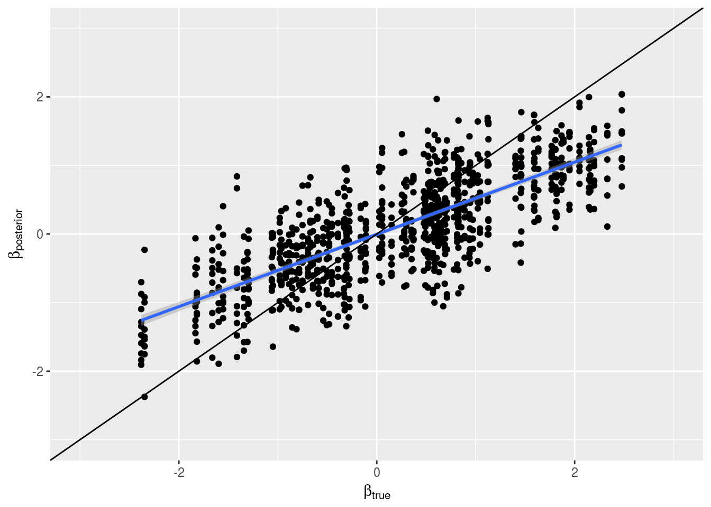
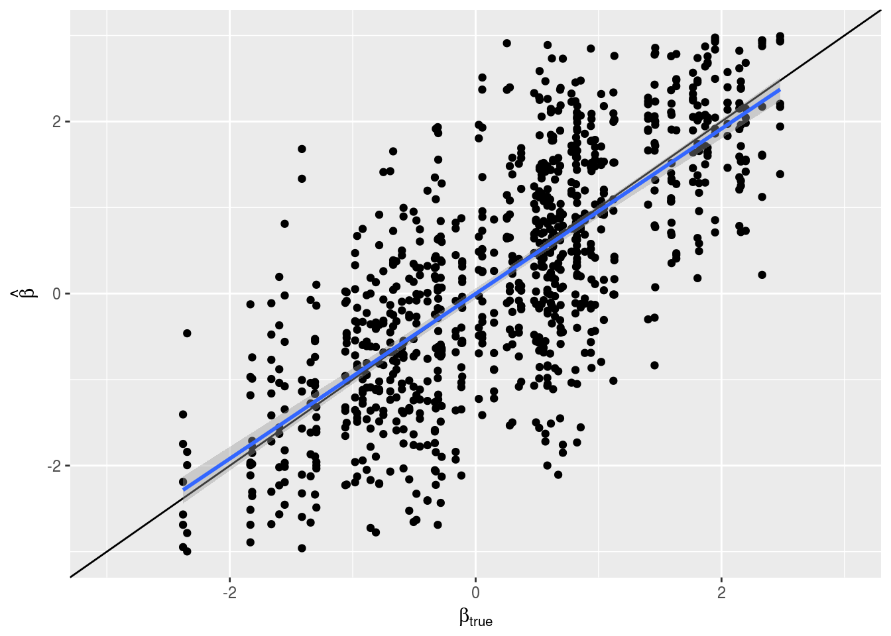
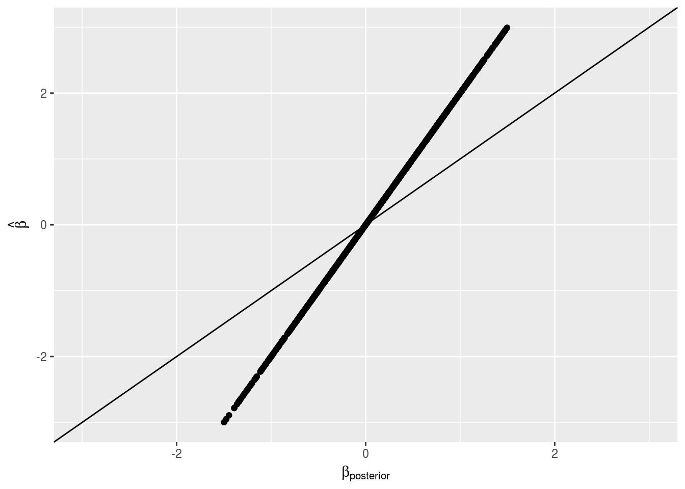
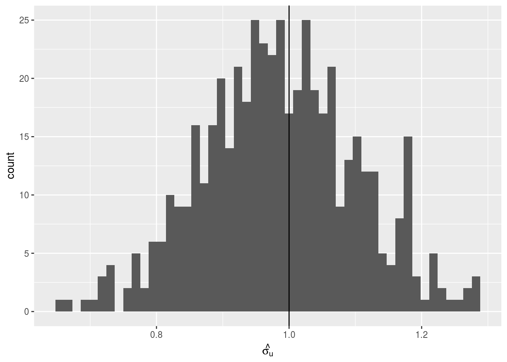
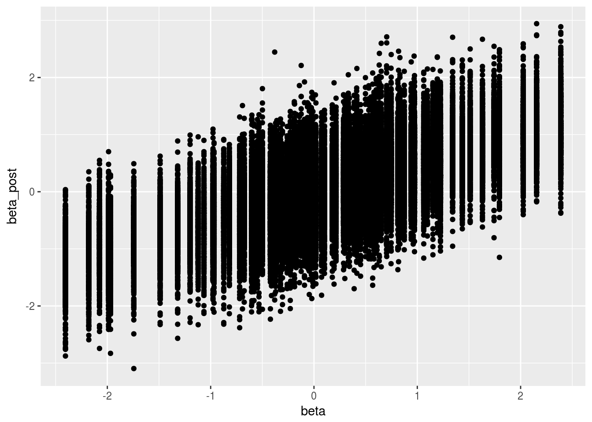
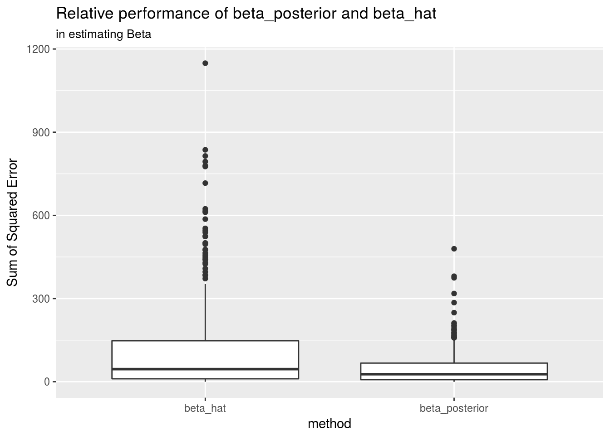

Last updated: 2017-11-16
Code version: 976274d
From Bishop’s, Pattern Recognotion and Machine Learning (Section 2.3) we have this useful property:
Given a marginal Gaussian distribution for \(\textbf{x}\) and a conditional Gaussian distribution for \(\textbf{y}\) given \(\textbf{x}\) in the form: \[p(\textbf{x}) = N(\textbf{x}|\boldsymbol{\mu},\Lambda^{-1})\]
\[p(\textbf{y}|\textbf{x}) = N(\textbf{y}|A\textbf{x}+\textbf{b},L^{-1})\] the marginal distribution of \(\textbf{y}\) and the conditional distribution of \(\textbf{x}\) given \(\textbf{y}\) arge given by
\[ p(\textbf{y}) = N(\textbf{y}|A\boldsymbol{\mu}+\textbf{b},L^{-1}+A\Lambda^{-1}A^{T})\] \[p(\textbf{x}|\textbf{y}) = N(\textbf{x}| \Sigma \left\{ A^{T} L ( \textbf{y} - \textbf{b} ) + \Lambda \boldsymbol{\mu} \right\} , \Sigma)\]
where : \[\Sigma = (\Lambda + A^{T}LA)^{-1}\]
Given this result, we can derive he posterior for \(\textbf{u}\)
Our prior for \(\textbf{u}\) is \[ \textbf{u} \sim N(0,I_p\sigma^2_u)\] Which means that the distribution for \(\hat{\textbf{u}}\) can be written \[\hat{\textbf{u}}|\textbf{u} \sim N(R\textbf{u},R+cI_p)\] Right away, we see that we can replace \(\textbf{u}\) with \(\textbf{x}\), and \(\hat{\textbf{u}}\) with \(\textbf{y}\) if we make the following substitutions:
| Symbol | Replacement |
|---|---|
| \(\boldsymbol{\mu}\) | \(0\) |
| \(b\) | \(0\) |
| \(\Lambda^{-1}\) | \(I_p \sigma^2\) |
| \(A\) | \(R\) |
| \(L^{-1}\) | \(R+cI_p\) |
We then see that the marginalized form of \(\hat{\textbf{u}}\) is:
\[ \hat{\textbf{u}} \sim N(0,\sigma_u^2R^2+R+cI_p)\]
and that the posterior is
\[ \textbf{u}|\hat{\textbf{u}} \sim N(\Sigma R (R+cI_p)^{-1}\hat{\textbf{u}},\Sigma)\] Where \[\Sigma = (\frac{1}{\sigma^2_u} I_p +R (R+cI_p)^{-1}R)^{-1}\]
Given the EVD of R, \(R=QD_{R}Q^{T}=Q \text{diag}\left(\lambda_j\right)Q^{T}\), we can rewrite the matrix \[L^{-1}=(QD_RQ^{T}+cI_p)^{-1}=(QD_{L^{-1}}Q)^{-1}\] where \(D_{L^{-1}}^{-1}=\text{diag}\left( \lambda_j+c \right)^{-1}\) and \(D_L=D_{L^{-1}}^{-1}=\text{diag}\left(\frac{1}{\lambda_j+c} \right)\)
Plugging that in to the equation for \(\Sigma\):
\[\Sigma= \left(\frac{1}{\sigma^2_u} I_p+(QD_RQ^{T})(QD_LQ^{T})(QD_RQ^{T})\right)^{-1}\] \[=(\frac{1}{\sigma^2_u} I_p+QDD_LDQ^{T})^{-1}= \left( \text{diag}\left(\frac{1}{\sigma_u^2}\right) + Q\text{diag}\left(\frac{\lambda_j^2}{\lambda_j+c}\right)Q^{T} \right)^{-1} = \left(Q \text{diag}\left( \frac{1}{\sigma_u^2}+\frac{\lambda_j^2}{\lambda_j+c}\right)Q^{T}\right)^{-1}\] \[=\left(Q \text{diag}\left( \frac{(\lambda_j+c)}{(\lambda_j+c)\sigma_u^2}+\frac{\lambda_j^2\sigma_u^2}{(\lambda_j+c)\sigma_u^2}\right)Q^{T}\right)^{-1}=Q \text{diag}\left(\frac{(\lambda_j+c)\sigma_u^2}{(\lambda_j+c)+\lambda_j^2\sigma_u^2} \right)Q^{T}\]
We’ll call the diagonal matrix \(D_\Sigma\)
Simplifying further:
\[\textbf{u}|\hat{\textbf{u}} \sim N(\underbrace{Q D_\Sigma Q^{T}}_\Sigma \underbrace{QD_{R}Q^{T}}_R \underbrace{QD_LQ^{T}}_{(R+cI_p)^{-1}}\hat{\textbf{u}},\underbrace{QD_\Sigma Q^{T}}_\Sigma)\]
\[= N(QD_\Sigma D_R D_LQ^{T},QD_\Sigma Q^{T})\]
\[= N\left( Q \text{diag}\left( \frac{(\lambda_j+c)\sigma_u^2}{(\lambda_j+c)+\lambda_j^2\sigma_u^2} \times \frac{\lambda_j}{1} \times \frac{1}{\lambda_j+c} \right)Q^{T}\hat{\textbf{u}},Q \text{diag}\left(\frac{(\lambda_j+c)\sigma_u^2}{(\lambda_j+c)+\lambda_j^2\sigma_u^2} \right)Q^{T} \right)\]
\[= N\left( Q \text{diag}\left( \frac{\sigma_u^2 \lambda_j}{(\lambda_j+c)+\lambda_j^2\sigma_u^2} \right)Q^{T}\hat{\textbf{u}},Q \text{diag}\left(\frac{(\lambda_j+c)\sigma_u^2}{(\lambda_j+c)+\lambda_j^2\sigma_u^2} \right)Q^{T} \right)\] For brevity, we’ll simply write:
\[\textbf{u}|\hat{\textbf{u}} \sim N \left(Q D_{\textbf{u}}Q^{T}\hat{\textbf{u}},QD_{\Sigma}Q^{T}\right)\]
Remember that \(\boldsymbol{\beta}=S\textbf{u}\) This means that \[\boldsymbol{\beta} \sim N( SQD_{\textbf{u}}Q^{T}\hat{\textbf{u}},SQD_\Sigma Q^{T}S^{T})\]
It also means that given a new vector of genotypes \(\tilde{\textbf{x}}\),
\[E[\tilde{\textbf{x}}\boldsymbol{\beta}]=\tilde{\textbf{x}}SQD_\textbf{u}Q^{T}\hat{\textbf{u}}\]
And that
\[\text{Var}(\tilde{\textbf{x}}\boldsymbol{\beta})=\tilde{\textbf{x}}SQD_\Sigma Q^{T}S^{T}\tilde{\textbf{x}}^{T}\]
In (one of) the most boring of scenarios, \(\sigma_u^2 = 1\), \(c=0\), \(R\) is the identity matrix,
 

Now let’s add a non-diagonal LD matrix
Using the 1 parameter (no confounding) model, are our estimates centered around the true value?
 
R version 3.4.2 (2017-09-28)
Platform: x86_64-pc-linux-gnu (64-bit)
Running under: Ubuntu 16.04.3 LTS
Matrix products: default
BLAS/LAPACK: /opt/intel/compilers_and_libraries_2018.0.128/linux/mkl/lib/intel64_lin/libmkl_intel_lp64.so
locale:
[1] LC_CTYPE=en_US.UTF-8 LC_NUMERIC=C
[3] LC_TIME=en_US.UTF-8 LC_COLLATE=en_US.UTF-8
[5] LC_MONETARY=en_US.UTF-8 LC_MESSAGES=en_US.UTF-8
[7] LC_PAPER=en_US.UTF-8 LC_NAME=C
[9] LC_ADDRESS=C LC_TELEPHONE=C
[11] LC_MEASUREMENT=en_US.UTF-8 LC_IDENTIFICATION=C
attached base packages:
[1] stats graphics grDevices utils datasets methods base
other attached packages:
[1] bindrcpp_0.2 RSSp_0.9 dplyr_0.7.4 purrr_0.2.4
[5] readr_1.1.1 tidyr_0.7.2 tibble_1.3.4 ggplot2_2.2.1
[9] tidyverse_1.1.1
loaded via a namespace (and not attached):
[1] RcppEigen_0.3.3.3.0 tidyselect_0.2.3 reshape2_1.4.2
[4] haven_1.1.0 lattice_0.20-35 colorspace_1.3-2
[7] htmltools_0.3.6 yaml_2.1.14 rlang_0.1.4
[10] foreign_0.8-69 glue_1.2.0 modelr_0.1.1
[13] readxl_1.0.0 bindr_0.1 plyr_1.8.4
[16] stringr_1.2.0 munsell_0.4.3 gtable_0.2.0
[19] cellranger_1.1.0 rvest_0.3.2 mvtnorm_1.0-6
[22] psych_1.7.5 evaluate_0.10.1 labeling_0.3
[25] knitr_1.17 forcats_0.2.0 parallel_3.4.2
[28] broom_0.4.2 Rcpp_0.12.13 scales_0.5.0
[31] backports_1.1.0 jsonlite_1.5 mnormt_1.5-5
[34] hms_0.3 digest_0.6.12 stringi_1.1.5
[37] grid_3.4.2 rprojroot_1.2 tools_3.4.2
[40] magrittr_1.5 lazyeval_0.2.1 pkgconfig_2.0.1
[43] Matrix_1.2-11 xml2_1.1.9000 lubridate_1.6.0
[46] assertthat_0.2.0 rmarkdown_1.7 httr_1.3.1
[49] R6_2.2.2 nlme_3.1-131 git2r_0.19.0
[52] compiler_3.4.2 This R Markdown site was created with workflowr